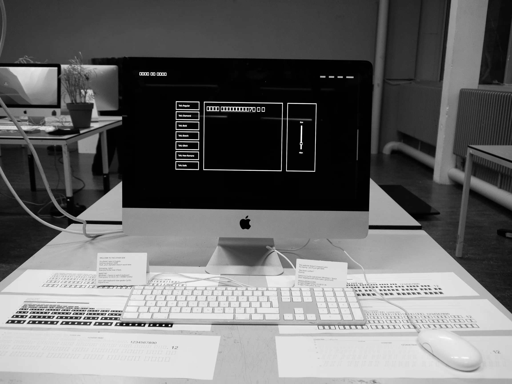
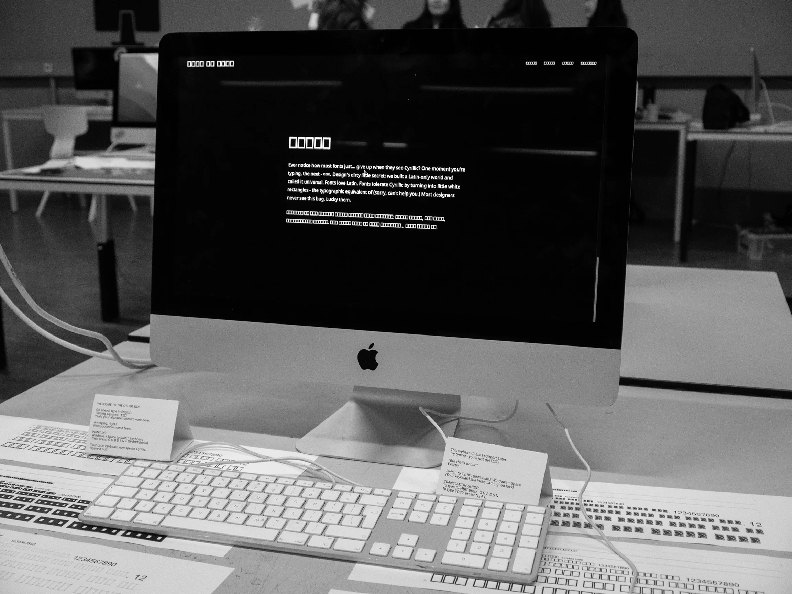
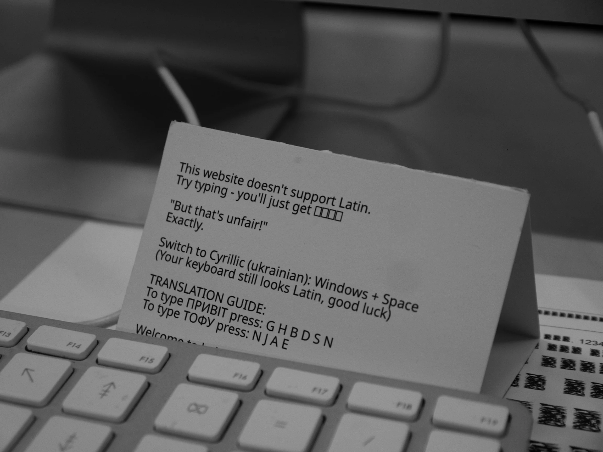
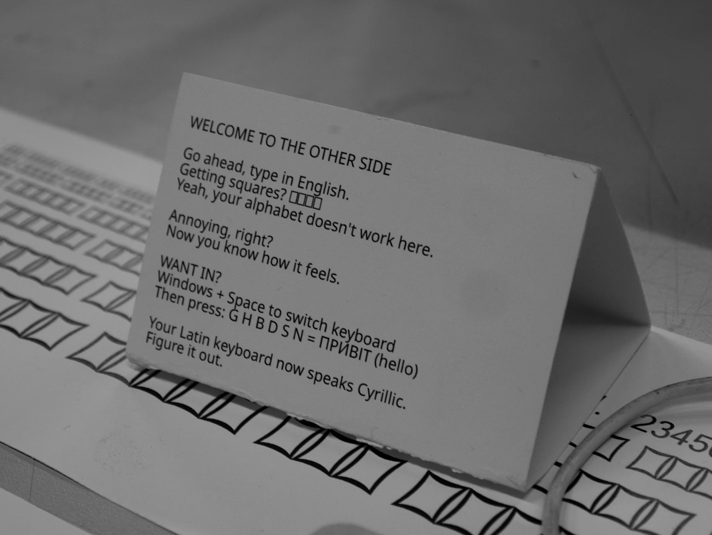
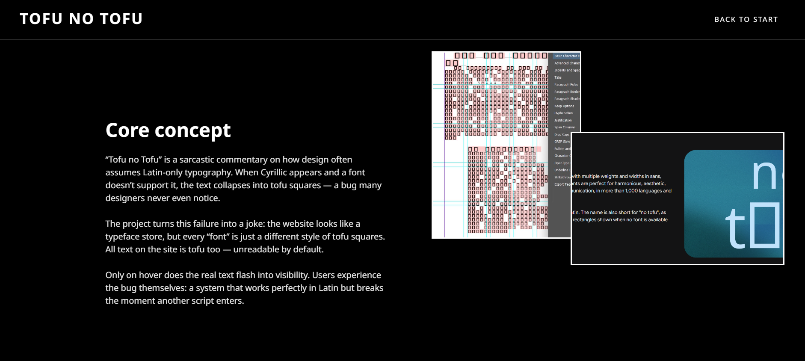

Tofu no Tofu
As a Ukrainian designer, I'm tired of seeing my language turn into white squares (tofu) because fonts don't support it. So I built a website where Latin is unsupported instead. I designed seven tofu typefaces - different styles of the same broken symbol - and turned them into a fake font store. Type in English? You get squares. Want in? Switch to Cyrillic and type blind using your Latin keyboard. Now you experience linguistic exclusion firsthand. Built with HTML, CSS, and JavaScript. All text is hidden as tofu until hovered.




